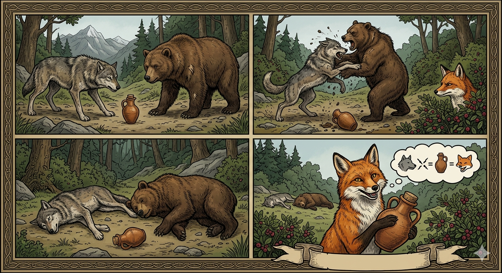

И.А. Дахкильгов. Хьехаме дувцарш - поучительные рассказы-притчи.
И.А. Дахкильгов. Хьехаме дувцарш - поучительные рассказы-притчи. Из ингушского фольклора.

Даьтта кхабилг сона йисай
ВӀаший доттагӀал а тесса, йолаенна цхьана лелаш хиннай чаи бордзи. Цкъа иштта лелаш, даьтта кхабилга тӀанийсабеннаб уж. Цхьаккха хьагуш да воацаш, латташ хиннай из. Нийсса кхабилг шин даькъа а йийкъа, шоашта дӀаяа мара ца езача, чаи бордзи вӀашагӀа хохкаеннай, "ер са я" цхьанне оалаш, "хьа яц ер, са я" вокхо оалаш, геттар къовсабеннаб. Кхы барт ца товш, вӀаший летай чаи бордзи. КӀотаргашта юкъера цар дов зувш даьгӀад цогал. ВӀаший лийтта, лийтта, чаи бордзи кхетам чура яьнна дӀаежай. Даьтта кхабилг хьа а ийца, цогало аьннад: - Чаи бордзи вӀашагӀалетай, даьтта кхабилг сона йисай.
РУССКИЙ
Кувшинчик с маслом мне достался
Побратались волк с медведем. Все было хорошо, пока они не наткнулись на кувшинчик с маслом. Видимо, кто-то потерял его. Надо бы медведю и волку поровну поделить и полакомиться маслом. Однако из жадности каждый из них начал говорить про кувшин: "Я его нашел, он мой". "Нет, он мой". Не придя к согласию, они затеяли драку. Из-за кустов за ними наблюдала лиса. После ожесточенного боя без чувств упали и волк, и медведь. Тут лиса вышла из укрытия, взяла себе кувшин с маслом и сказала: "Подрались волк с медведем, а кувшинчик масла мне достался".
ENGLISH
I ended up with a jug of butter
The wolf and the bear became friends. Everything was fine until they stumbled upon a little jug of butter. Someone must have lost it. The bear and the wolf should have shared it equally and enjoyed the butter. However, out of greed, each of them began to claim the jug: 'I found it, it's mine.' 'No, it's mine.' Unable to reach an agreement, they started a fight. A fox was watching them from behind the bushes. After a fierce battle, both the wolf and the bear collapsed, unconscious. Then the fox came out of hiding, took the jug of butter for herself and said: 'The wolf and the bear fought, and I got the little jug of butter'.
НОХЧИЙН
ПОГОВОРКИ
ВӀалла ха ца йоагӀар – жӀали, еча, яа ца ховр – пхьу. Тот, кому ни разу в жизни не повезет, - собака; а если повезет и он не воспользуется этим – пес он. One who never gets a stroke of luck in life is a dog; one who gets it and fails to use it is a mongrel. Цкъа а аьттув ца хуьлург – ж1але, хилча а пайда ца эцург – пхьу ду.Даа пхьор доацача бус дулх-хьалтӀам нийсаденнад. Нечем было поужинать, да вдруг мясо с галушками бог дал. There was nothing to eat that evening, but suddenly meat and dumplings appeared, gift of God. Юург доцу буса дулх-хьалт1ам дукхаделла.ДегӀаца низ болаш вар цхьаннех котвоал, хьаькъал долаш вар иттанех котвоал. Сильный телом побеждает одного, сильный умом побеждает десятерых. A man strong in body defeats one enemy; a man strong in wisdom defeats ten. Дег1ах низ болу стаг цхьаннах толам бо, хьекъал болу итт стагах толам бо.Каяннача истаро бордз эшаяьй. Удачливый бык волка одолел. A lucky ox overcame a wolf. Аьттув болу уст борзах толам баьккхина.МоцагӀа цогало яьхад: “Цхьа зама яр бага лекъаш лелхаш, хӀанза-м бага моза а эккхац”. Некогда лиса жаловалась: “Было время – в рот залетали одни перепелки, а теперь и муха не залетает”. The fox once complained: "There was a time when quails flew straight into my mouth — now not even a fly comes near it." Хенахь цхьогало аьлла: «Цхьаъ хан яра, бага лекъаш чуйийлхара, хьанза мозий чу ца ло».Наха юкъе кхийначо Ӏехаваьв жена юкъе кхийнар. Выросший среди людей перехитрил выросшего среди овец. One raised among people outwitted one raised among sheep. Наха юккъехь кхиина стагана жен юккъехь кхиина хьуна тӀаьхьадаккхийтина.Наьха даьттах тийша худар де ма отта. Не начинай варить кашу в расчете на чужое масло. Don't start cooking porridge counting on someone else's butter. Наха даьттах хабар йина худар де ма отта.ТӀадена во ла хала дале а тӀадена дика ла дуккха халагӀа да. Трудно вынести несчастье, но куда труднее вынести нежданно свалившееся счастье. It's hard to bear misfortune, but even harder to bear sudden, unexpected fortune. Т1адена вон ла хала дале а, т1адена дика ла халаг1а ду.Уллача берзийла лийна цогал теннад. Рыскающая лиса добычливее волка-лежебоки. A roving fox catches more prey than an idle wolf. Уллачу борзал ловзаш лийна цхьогал тоьар ду.Цхьанне аьттув байнача кхычун аьттув боал. Где один терпит неудачу, там другой ее находит. Where one man's luck runs out, another finds his own. Цхьанне аьттув байначохь, кхечунна аьттув хуьлу.Чаи борзи вӀашагӀалетад, даьтта кхабилг сона йисай. Передрались волк с медведем за кувшинчик масла, и мне он достался. The bear and the wolf fought over a jar of butter, and it fell to me. Чаьи борзи вовшашца тохадаьлла, даьтта кема сона йисна.ШайтӀа Ӏехадаьр шайтӀа кӀориг я. Шайтана перехитрил лишь его детеныш. Only its own cub can outwit the devil. Шайт1а Ӏехабахьа шайт1ан к1орни ву.Ши моастагӀа цхьан тхов кӀала тарлац. Двое врагов не уживутся под одной крышей. Two enemies cannot live under the same roof. Ши мостаг1а цхьана тхов к1ел ца дуьсу.